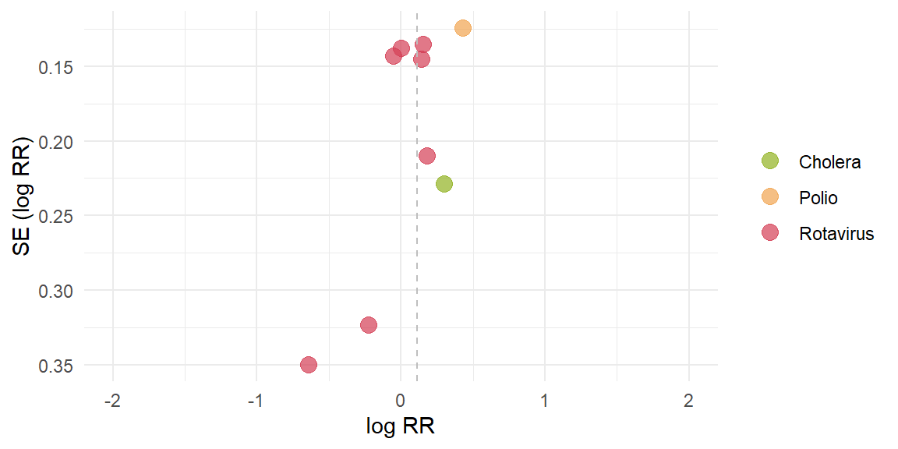
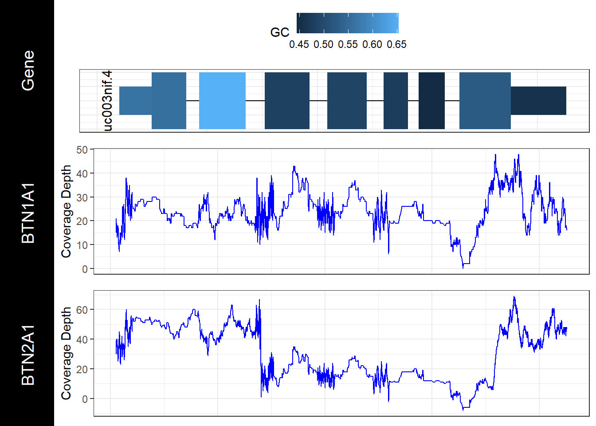
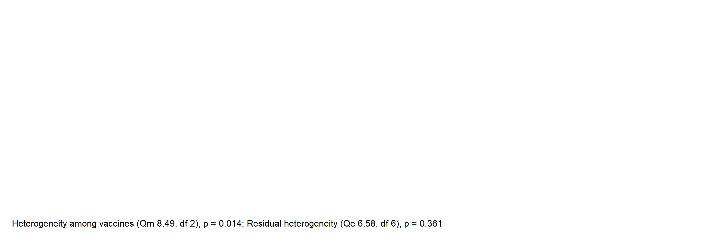
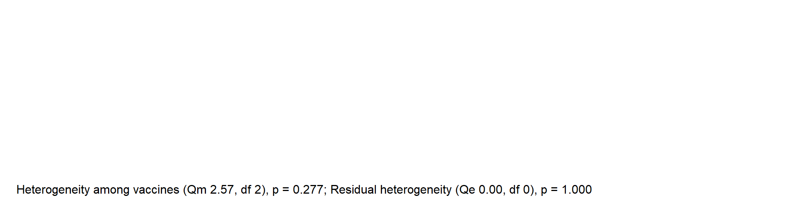
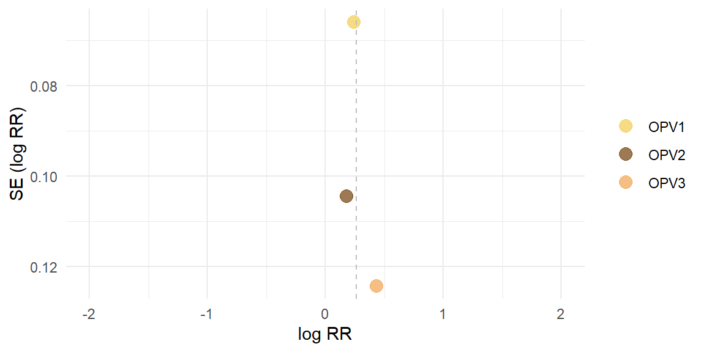
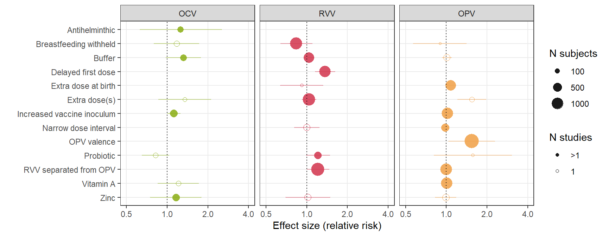

Chapter 7 Reproducble research. Part 2
Choose one of the papers used in this study. Or, using the OSF website, search for R code paper or for instance R code paper AND tags:(“COVID-19”) and select a project that involves a paper on anything (remotely) related to life sciences. Make sure you selected a project that has a dataset and R-code shared in the project environment. Have a look at the code. Describe in your own words what the code intents to achieve. In terms of readibility of the code, how would you grade (1(very bad)-5(very good)) the code available. Download the code and the data to a new RStudio project Run the script or code that is available to reproduce at least 1 figure When you encounter errors or flaws in the script, try fixing them and record your changes. Taken together on a scale from 1 (very hard) to 5 (very easy), how much effort did it take you to reproduce the visualization from the project, report or article Generate an RMarkdown script that contains the details on the project you selected, the code you used to create the visualization and your score for reproducibility.
Gereral information
Title : Interventions to improve oral vaccine performance in developing countries: a systematic review and meta-analysis
This dataset contains a systematic review of vaccine performance in developing countries. The goal of this project is countering the spread of cholera, polio, rota virus in India, Pakistan, South Africa, and other developing countries with the help of a vaccine. The goal of the code is to visualize increase in diseases, dosis vaccination in countries. The purpose of this study is to identify which countries are under-vaccinated.
Source: https://osf.io/bemw6/

Forest plot

Funnel plot

Egger’s test
## [1] "Infants replicated across vaccines or vaccine effect significant, therefore separate tests performed"
## [1] "Cholera:"
## [1] "Insufficient studies (n<3)"
## [1] "Rotavirus:"
##
## Regression Test for Funnel Plot Asymmetry
##
## Model: mixed-effects meta-regression model
## Predictor: standard error
##
## Test for Funnel Plot Asymmetry: z = -1.7034, p = 0.0885
## Limit Estimate (as sei -> 0): b = 0.3711 (CI: -0.0290, 0.7713)
##
## [1] "OPV3:"
## [1] "Insufficient studies (n<3)"Meta-analysis output
##
## Random-Effects Model (k = 9; tau^2 estimator: REML)
##
## logLik deviance AIC BIC AICc
## -0.6935 1.3870 5.3870 5.5459 7.7870
##
## tau^2 (estimated amount of total heterogeneity): 0.0200 (SE = 0.0246)
## tau (square root of estimated tau^2 value): 0.1415
## I^2 (total heterogeneity / total variability): 41.19%
## H^2 (total variability / sampling variability): 1.70
##
## Test for Heterogeneity:
## Q(df = 8) = 15.0759, p-val = 0.0577
##
## Model Results:
##
## estimate se zval pval ci.lb ci.ub
## 0.1125 0.0759 1.4809 0.1386 -0.0364 0.2613
##
## ---
## Signif. codes: 0 '***' 0.001 '**' 0.01 '*' 0.05 '.' 0.1 ' ' 1Meta-regression output
##
## Mixed-Effects Model (k = 9; tau^2 estimator: REML)
##
## tau^2 (estimated amount of residual heterogeneity): 0.0000 (SE = 0.0152)
## tau (square root of estimated tau^2 value): 0.0011
## I^2 (residual heterogeneity / unaccounted variability): 0.00%
## H^2 (unaccounted variability / sampling variability): 1.00
## R^2 (amount of heterogeneity accounted for): 99.99%
##
## Test for Residual Heterogeneity:
## QE(df = 6) = 6.5822, p-val = 0.3612
##
## Test of Moderators (coefficients 2:3):
## QM(df = 2) = 8.4932, p-val = 0.0143
##
## Model Results:
##
## estimate se zval pval ci.lb ci.ub
## intrcpt 0.3023 0.2287 1.3217 0.1863 -0.1460 0.7505
## VaccinePolio 0.1320 0.2603 0.5073 0.6119 -0.3781 0.6422
## VaccineRotavirus -0.2613 0.2375 -1.1002 0.2712 -0.7268 0.2042
##
## ---
## Signif. codes: 0 '***' 0.001 '**' 0.01 '*' 0.05 '.' 0.1 ' ' 1Intervention-specific outputs
Summary of cholera studies
## [1] "Insufficient studies (n<2)"Summary of rotavirus studies
##
## Random-Effects Model (k = 7; tau^2 estimator: REML)
##
## logLik deviance AIC BIC AICc
## 1.0133 -2.0266 1.9734 1.5569 5.9734
##
## tau^2 (estimated amount of total heterogeneity): 0.0000 (SE = 0.0152)
## tau (square root of estimated tau^2 value): 0.0011
## I^2 (total heterogeneity / total variability): 0.00%
## H^2 (total variability / sampling variability): 1.00
##
## Test for Heterogeneity:
## Q(df = 6) = 6.5822, p-val = 0.3612
##
## Model Results:
##
## estimate se zval pval ci.lb ci.ub
## 0.0410 0.0641 0.6397 0.5224 -0.0846 0.1665
##
## ---
## Signif. codes: 0 '***' 0.001 '**' 0.01 '*' 0.05 '.' 0.1 ' ' 1Summary of PV3 studies
## [1] "Insufficient studies (n<2)"Meta-regression: secondary moderators
Age group
## [1] "Residual heterogeneity not significant (p>0.05)"Income setting
## [1] "Residual heterogeneity not significant (p>0.05)"Background immunogenicity (seroconversion rate in the control group)
## [1] "Residual heterogeneity not significant (p>0.05)"OPV-specific analysis
Forest plot

Funnel plot

Egger’s test
Infants replicated across vaccines, therefore separate tests performed
## [1] "OPV1:"## [1] "Insufficient studies (n<3)"## [1] "OPV2:"## [1] "Insufficient studies (n<3)"## [1] "OPV3:"## [1] "Insufficient studies (n<3)"Meta-analysis output
##
## Multivariate Meta-Analysis Model (k = 3; method: REML)
##
## logLik Deviance AIC BIC AICc
## 1.5126 -3.0252 -1.0252 -2.3320 2.9748
##
## Variance Components:
##
## estim sqrt nlvls fixed factor
## sigma^2 0.0000 0.0000 1 yes Reference
##
## Test for Heterogeneity:
## Q(df = 2) = 2.5696, p-val = 0.2767
##
## Model Results:
##
## estimate se zval pval ci.lb ci.ub
## 0.2615 0.0508 5.1446 <.0001 0.1619 0.3611 ***
##
## ---
## Signif. codes: 0 '***' 0.001 '**' 0.01 '*' 0.05 '.' 0.1 ' ' 1Meta-regression output
##
## Multivariate Meta-Analysis Model (k = 3; method: REML)
##
## Variance Components:
##
## estim sqrt nlvls fixed factor
## sigma^2 0.0000 0.0000 1 yes Reference
##
## Test for Residual Heterogeneity:
## QE(df = 0) = 0.0000, p-val = 1.0000
##
## Test of Moderators (coefficients 2:3):
## QM(df = 2) = 2.5696, p-val = 0.2767
##
## Model Results:
##
## estimate se zval pval ci.lb ci.ub
## intrcpt 0.2442 0.0659 3.7071 0.0002 0.1151 0.3732 ***
## Measure_of_SCOPV2 N-AB -0.0611 0.1234 -0.4953 0.6204 -0.3031 0.1808
## Measure_of_SCOPV3 N-AB 0.1902 0.1406 1.3524 0.1763 -0.0854 0.4658
##
## ---
## Signif. codes: 0 '***' 0.001 '**' 0.01 '*' 0.05 '.' 0.1 ' ' 1Serotype-specific outputs
Summary of PV1 studies
## [1] "Insufficient studies (n<2)"Summary of PV2 studies
## [1] "Insufficient studies (n<2)"Summary of PV3 studies
## [1] "Insufficient studies (n<2)"